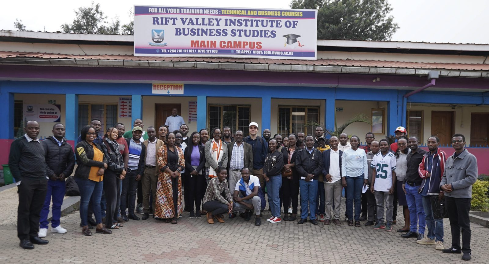
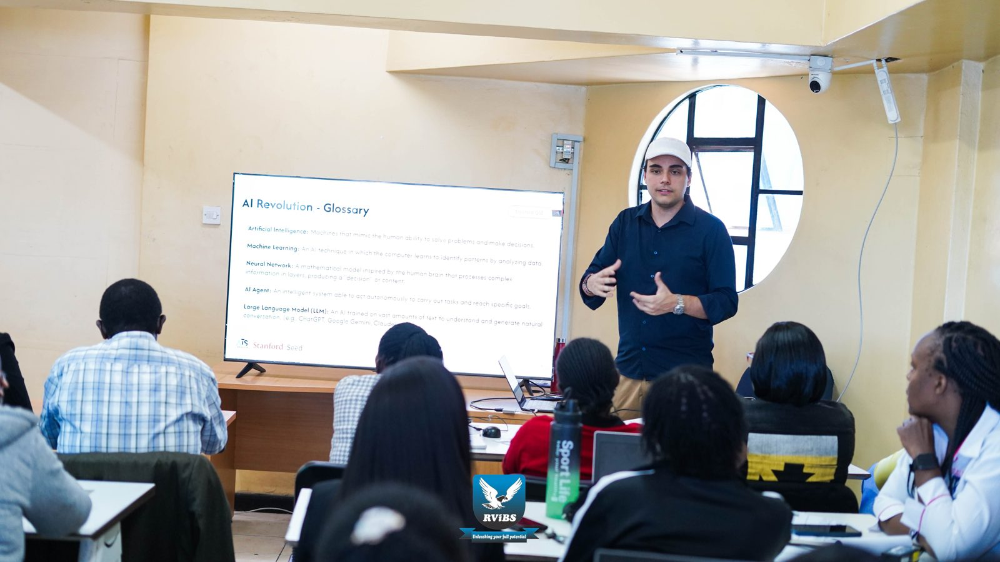

Gabriel Couto
I am a Research Analyst at the Stanford University Graduate School of Education, and I'm affiliated with the Center for Population Health Sciences at the School of Medicine. I am a former fellow of the Lemann Center for Educational Entrepreneurship and Innovation in Brazil (Stanford GSE) and a former student fellow at the Hoover Institution.
I was born and raised in Brazil. My work focuses on using innovation and evidence-based research and interventions to improve access to education, reduce poverty, and advance economic development.
In my free time, I enjoy playing tennis and the drums, and getting out into nature.
Research
Education and Primary Healthcare
This project examines the relationship between education and primary healthcare. It relies on data collection and statistical analysis to understand how the two are linked, with the goal of informing policies that strengthen both systems and improve population health and educational outcomes.
Student Journeys at a Kenyan TVET College
A nine-week field project at a technical and vocational college in Kenya's Rift Valley, aimed at understanding students' journeys and how to improve their experience. Classroom observations, a survey of 348 students, and the college's admissions records were combined to look at skills preparation, absenteeism, and plans after graduation, alongside research on the job market in Kenya and the Great Rift Valley region. The project also showed how stronger data practices can support the college's decision making.


Machine Learning in Education Policy Analysis
Using data from Brazil's national SAEB assessment, this project applied Machine Learning models to identify which municipal education management practices, such as resource allocation, school infrastructure, and performance incentives, are most predictive of student learning. The results highlight nonlinear relationships in education data and the limits of predicting performance from administrative variables alone.
Small Island Developing States
Research on socioeconomic conditions, education, and community structures across more than 50 Small Island Developing States. The resulting reports were used at COP 29 and the 4th International Conference on Small Island Developing States to help decision-makers understand these countries' needs. The project also included translating fieldwork documents for Portuguese- and French-speaking states such as Cape Verde and Timor-Leste.


Educating Syrian Refugee Children in the Middle East and North Africa
About 2.6 million of the Syrian refugees registered in the Middle East and North Africa are children, many with little or no access to education. Drawing on UNHCR qualitative data and the literature on humanitarian education, this project examined the obstacles organizations face in reaching displaced children and argues for flexible approaches suited to refugees' circumstances.
Experience
UNESCO
Used mixed methods (econometrics, statistics, machine learning, qualitative) analysis of national documents to support UNESCO’s "National Visions of the Future Beyond 2030" research project.
Lemann Center, Stanford University
Conducted mixed-methods research analyzing and designing policies to improve attendance in Brazil’s public technical and vocational (TVET) schools.
Brazilian Student Association (BRASA)
BRASA is the largest association of Brazilian students abroad. Managed its global membership program that serves 20,000 students in 50 cities and built the organization's first centralized membership database, supporting growth to more than 90 chapters. Supported the organization of two global conferences in São Paulo and Chicago.


Mappit
Lead the implementation of Home Runners, a program to help Brazilian students finishing their studies abroad return to the job market in Brazil, connecting them with local companies.

Also: Youth Delegate, World Bank Group Youth Summit (2024).
Activism
Information Literacy in Brazilian Favelas
Brazil scores well below the OECD average in reading, and misinformation is widespread. Since 2022, I have visited public schools in favelas to deliver information literacy training to more than 300 students, along with conversations with teachers and staff about students' needs and the role of education in staying in school. The work also inspired a previous research project on the link between information literacy and authoritarianism in Brazil.


Student Visa Advocacy
When U.S. consulates in Brazil closed during the pandemic, thousands of students admitted to American universities risked losing their places. I lead a campaign with 2,000 students to press the U.S. government and Brazil's Ministry of Foreign Affairs, gaining national attention through SBT News and newspaper coverage. The consulates reopened a month later.
Conquistando o Mundo
I directed preparatory program for +450 Brazilians applying to universities abroad, which was created at a time when information about U.S. admissions was scarce in Brazil and often available only through costly study abroad agencies. I lead a team of students at American universities who mentored applicants through daily live classes on exams, writing, and application documents. We also provided support that also included psychological guidance, SAT and English proficiency exam simulations, and individual feedback on essays.
English for All & Animus School
I provided tutoring in math, physics, English, and arts for more than 65 learners aged 15 to 60 from low-income communities while schools were closed. The program combined academic support with human development activities to improve school performance and job prospects.

Contact
I'm always happy to talk about education policy, development, and research collaborations. Reach me at couto@stanford.edu.